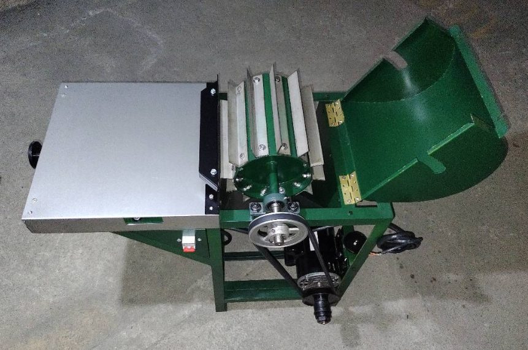

NC2024/0003879
PATENTEPATENTE – MÁQUINA DESFIBRADO FINO DE PENCAS
MÁQUINA PARA DESFIBRADO FINO DE PENCAS DE FIQUE, PIÑA Y TALLO DE PLANTAS MUSÁCEAS
- Inventor
- Juan Mauricio Mazutier
- Sector
- Ingeniería Mecánica
- Redes sociales
- Abrir enlace ↗
- Contacto
- 📞 3102503208